Hello 2021
Jan 3 - Written by Bonnie and Emily
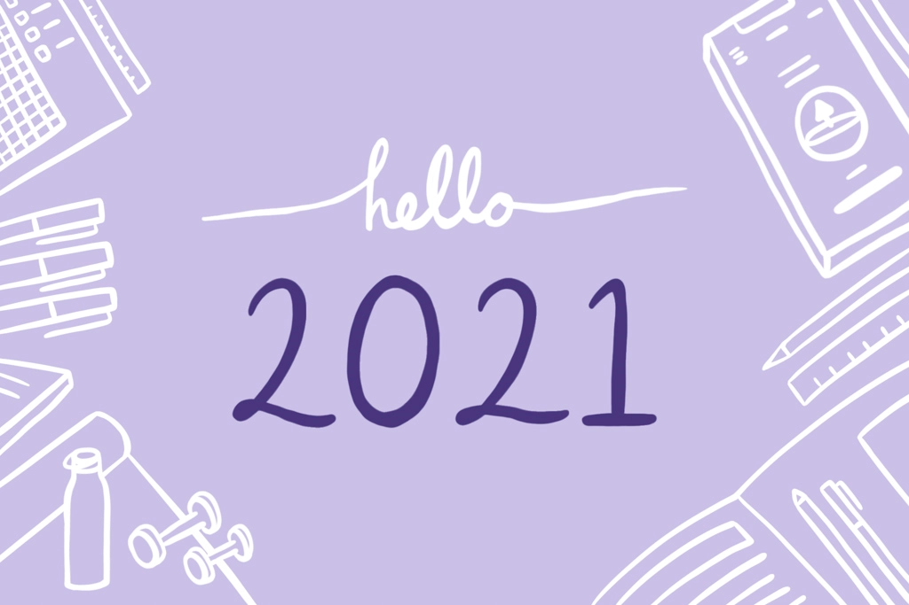
Happy New Year everyone!! 2020 was a whirlwind of events and now we are finally on to the new year with new goals and new resolutions.
This year, we decided we’d both keep a journal to help us organize our lives and set goals. As two people who aren’t the best at keeping up with agendas and planners, we figured this year would be the year as we can hold each other accountable and journal together.
Bonnie’s Goal Tracking Tips
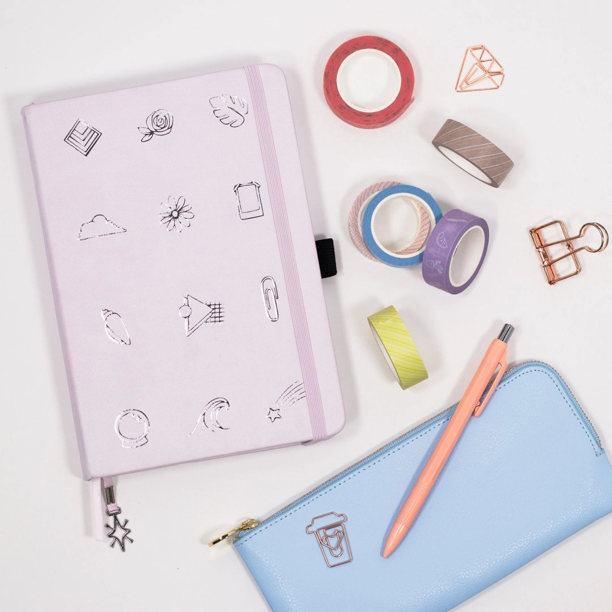Since there were a few habits and goals that I really wanted to keep track of this year and as someone who is not the best at organizing and doodling, I opted for a pre-doodled bullet journal versus Emily’s journal that is made from scratch. Since this is my first time bullet journaling and personally knowing that I am lacking in creativity to really commit to a full year of creating my journal from scratch, I did the next best thing-- buying one! The bullet journal that I purchased is created by a wonderful youtuber, AmandaRachLee, who has created beautifully drawn illustrations and monthly habit trackers, calendars, and to-do lists named the 2021 Doodle Planner. The great part is that you can still personalize each page by coloring in the doodles with whatever colors you like and personalizing the keys for your habit trackers! This is a great planner to really ease your way into bullet journaling and goal tracking especially if you’re new to bullet journaling like I am!
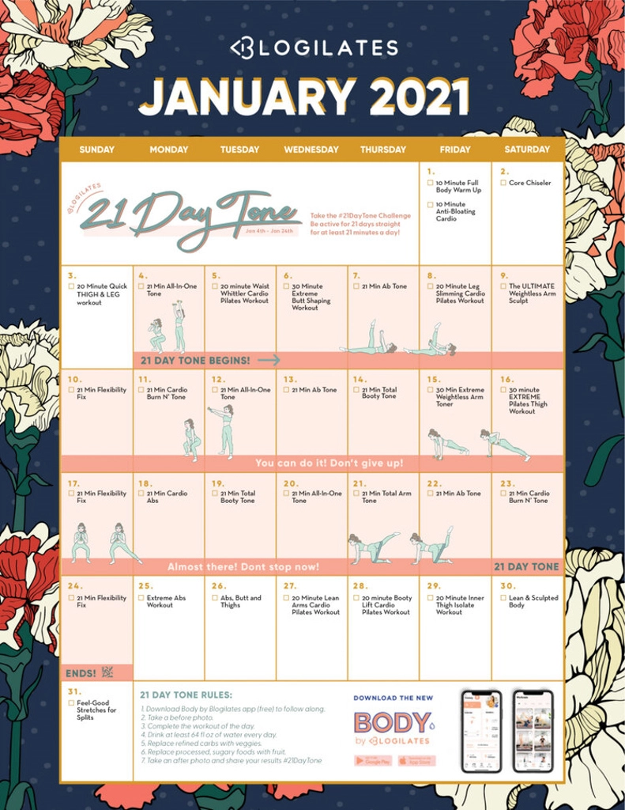Of course bullet journaling wasn’t the only way I was going to keep track of my goals, especially as a major multi-tasker and since a lot of my goals are very different from each other, they also required their own independent tracking as well. In this new year, I also wanted to exercise more and become healthier especially since this quarantine period. What I opted to do is really begin following another youtuber that I really enjoy -- Blogilates! Cassey Ho is a great pop pilates trainer and she even creates pre-made workout calendars for each month that has YouTube playlists to go along with that are free! Since it was pretty easy to follow her workout regimen, I decided to download her January calendar and start ticking off her workout videos! If you’re interested as well, Blogilates is coming out with a 21 day challenge for this month that starts tomorrow!
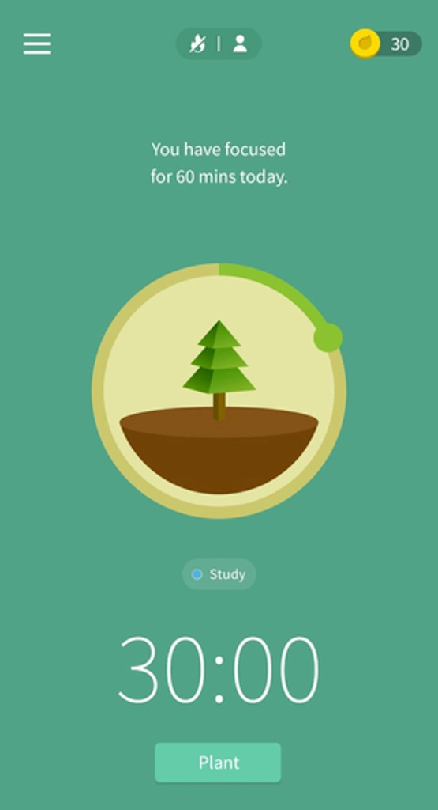
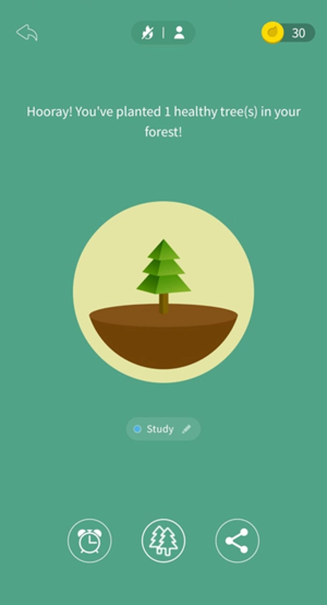
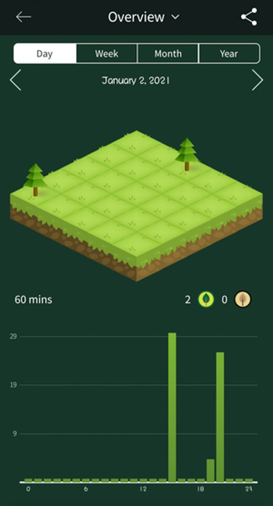
Another really fun tracking tool that I’ve begun to use as well is one of the cutest apps I found named Forest! This tool was mainly for me to stick to the habits that I’ve created including reading more in the new year and really putting some more time into my DIY crafts, especially since all the Seven Days of Christmas videos! Forest allows you to set a timer for how long you want to work on a task and will plant a virtual tree in your forest while you’re working! Once you’ve completed enough tasks, your forest land will slowly fill with many adorable trees and bushes!
2021 really does feel like a fresh start with all the events that have happened in 2020, I think this year feels like one of the best opportunities to set goals and also find the enjoyable moments in life to take a break and work on hobbies and crafts that you really want to spend time on. Now that we’re all home, time seems to fly by and sometimes we forget about the goals that we had set for ourselves early on.
Emily’s Bullet Journal Recommendations
Over the years, I’ve seen so many bullet journals on Pinterest that inspired me to start my own; however, I am really bad at keeping up with journals and agendas resulting in two failed attempts at bullet journaling already. As 2020 was coming to an end, I figured the start of a new year would be the best time to give it another shot.
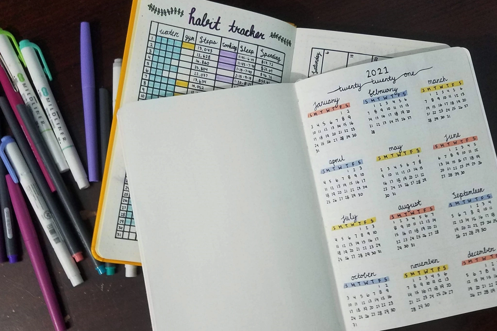I purchased a new dotted journal for the year and began searching for inspiration as to how I wanted it set up. The dotted journals I’ve tried are Minimalism Art and Paperage. Both journals are very similar, the Paperage journal is a little shorter and wider than the Minimalism Art journal but the paper quality on both are about the same. I prefer the Minimalism Art journal more because the cover has a softer texture and feels a bit sturdier than the Paperage one. I am currently using the Paperage one and I find that it lays a bit flatter than the Minimalism Art one which definitely helps when creating all the spreads.
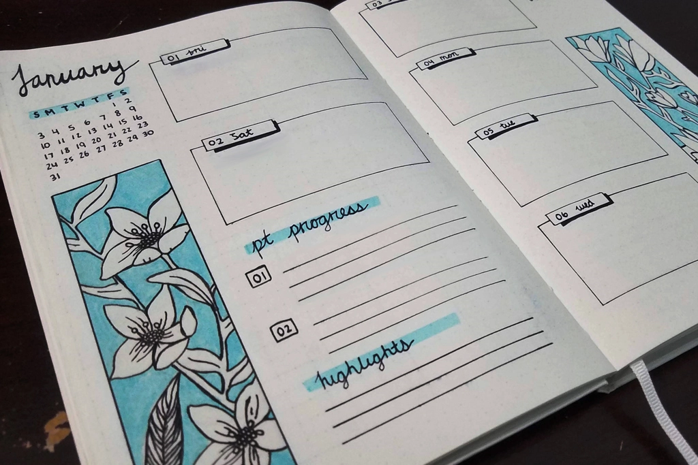What I like about creating your own bullet journal is the freedom and flexibility to have whatever pages will be most useful for you and a setup that also works for you. I’ve had so many premade agendas and journals in the past that I thought I could stick with since all the work was done for me, but those often led to unused pages or layouts that just weren’t ideal. Now, creating your own bullet journal can be daunting and is a lot of work to set up but if you are willing to take the time to do it, it can pay off.
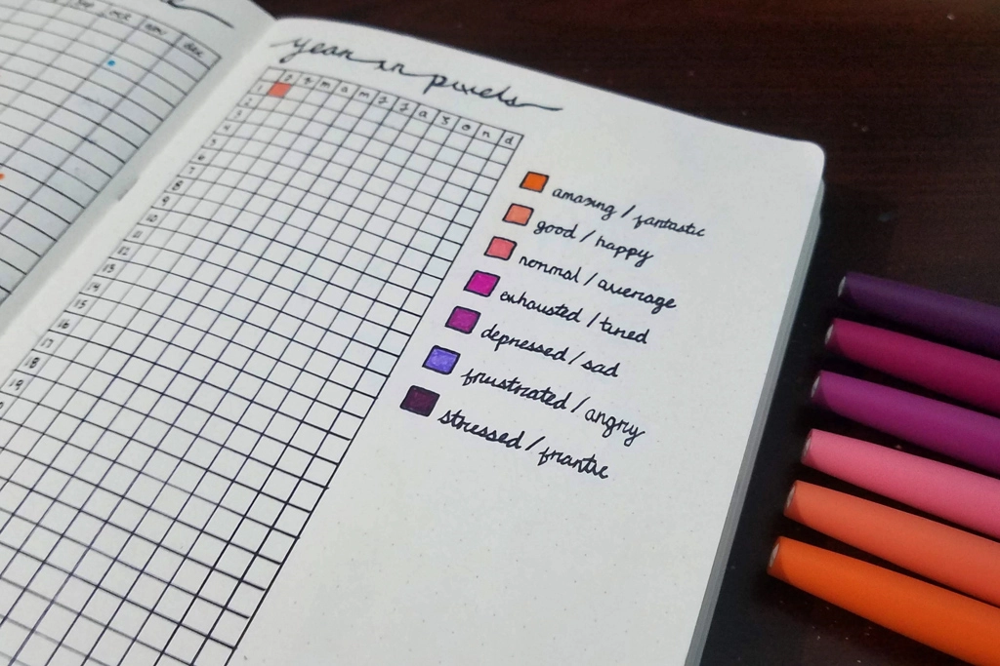Personally for me, I wanted to start journaling in 2021 as a way to track progress and habits as well as being a little more organized with my time. Working from home has really made all the days feel like they blend together and it became easy to forget what I have done in the past week. I’ve kept all the trackers in my journal fairly straightforward and simple as I wanted it to be something I can easily look back on and see some sort of trend or growth. Now what’s nice about making your own journal is that if you find a layout isn’t working for you, you can try something new next month.
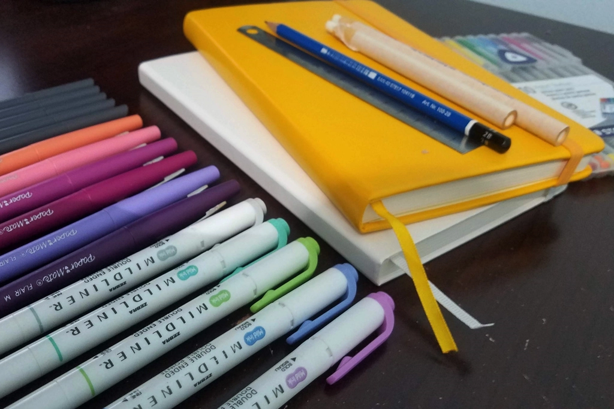My favorite bullet journal tools and supplies include a lot of different felt tip pens and inspo from Pinterest. I’ve been using the iBayam Fineliner pens to create all my layouts; however, my favorite fineliner pens are the Staedtler Triplus Fineliner pens. I use these pens for just about everything in my journal along with the Zebra Mildliners that add a nice pop of color to your spreads. I also have a collection of the Papermate Flair pens which I’ll use for minor details but aren't my favorite as they aren’t as thin as the other pens I listed. Enough about pens, the other tool I love using is my mini ruler from Muji which is the perfect size for creating all the grids and boxes you need. The only thing I wish this ruler had was a couple extra centimeters so that it can span the height of my journal but that’s not a big issue. Some other tools I suggest are having a pencil and a good eraser so that if you’re a little OCD like me, you can preplan your layouts before committing to them. Like having so many different pen options, I love having a few different erasers to work with, one of which being an eraser stick to use for small areas.
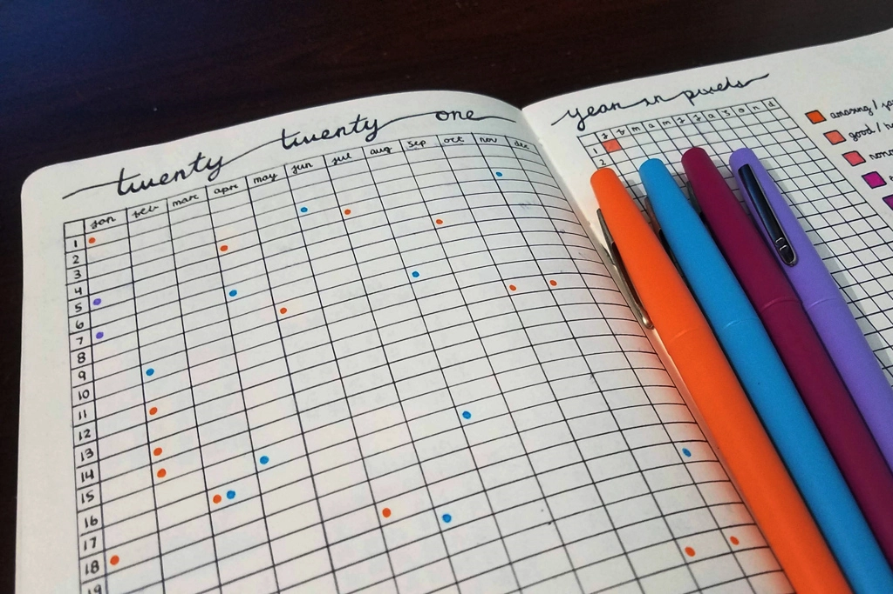No matter what tools you get for journaling, it's what you choose to fill it with that makes all the difference. Bullet journaling is very much what you put in is what you get out so if you want to make everything really detailed and structured, do that, but if you work better with a more relaxed set up, then that’s what you should do. I’m trying out a more structured approach and only adding what works for me so see what works for you and stick with that.
Happy New Year again to all! We hope you are successful in your endeavors and goals for the year and if you do start a bullet journal or buy your own, let us know!